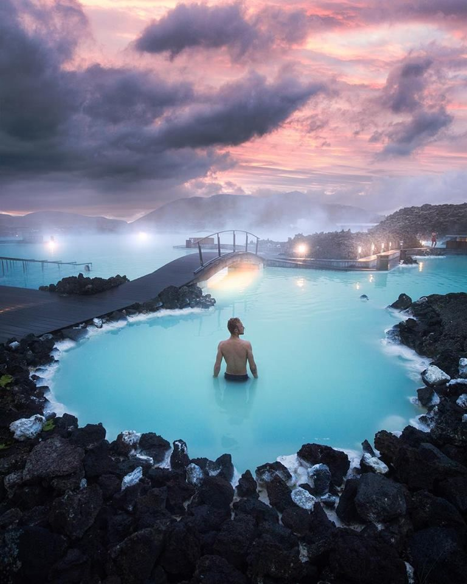
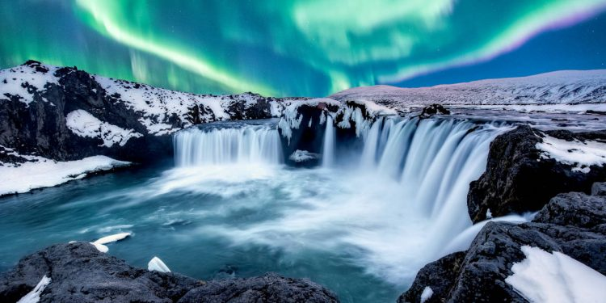

Es un país soberano localizado en el extremo noroeste de Europa, cuyo territorio abarca la isla homónima y algunas pequeñas islas e islotes adyacentes en el océano Atlántico, entre el resto de Europa y Groenlandia. A causa de su localización en la dorsal mesoatlántica, es un país con gran actividad volcánica y geológica, factor que afecta en gran medida al paisaje del territorio islandés. El interior del país consiste en una meseta caracterizada por desiertos, montañas, glaciares y ríos glaciares que fluyen hacia el mar a través de las tierras bajas. sitios a conocer: La Laguna Azul, Lago glacial, observar auroras boreales,visitar la cascada Seljalandsfoss.
Me encantaria visitar este lugar en compañia de mi novio ya que es un lugar magico para relajarse y ver la naturaleza en todo su esplendor, sus colores, sus lagos, su agua climatizada, sus cascadas, sus tardeceres hacen del lugar un gran atractivo para nosotros.
 